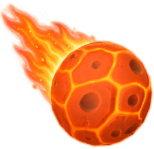

CUBE LAND / TÀI LIỆU THIẾT KẾ
Booster
Giá bằng currency, lượng mua và mốc mở khóa từ cấu hình đóng gói.
Phạm vi: Dữ liệu đóng gói trong APK 0.6.3 và mã IL2CPP. Cấu hình máy chủ, A/B test và trạng thái tài khoản có thể thay đổi trải nghiệm thực tế.
| Booster | Thời điểm | Mô tả trong asset | Giá cấu hình | Lượng mua | unlockLevel | Giá / đơn vị |
|---|---|---|---|---|---|---|
 Magnet Magnet | Trong màn | Select any shooter! | 600 | 3 | 4 | 200 |
 Magic Wand Magic Wand | Trong màn | Shuffle the shooters! | 300 | 3 | 6 | 100 |
 Bounce Bounce | Trong màn | Select a shooter to free a slot! | 700 | 3 | 8 | 233,333 |
 Vacuum Vacuum | Trong màn | Pick a color to vacuum! | 1900 | 1 | 10 | 1.900 |
 Extra Slot Extra Slot | Trong màn | Play with an extra slot! | 1900 | 1 | 12 | 1.900 |
 Meteor Shower | Trước màn | Blast your way ahead! | 600 | 3 | 20 | 200 |
| Bonus Slot | Trước màn | Play with a bonus slot! | 1900 | 1 | 25 | 1.900 |
Giá là boosterCost của asset; chưa xác nhận mọi luồng UI đều áp dụng nguyên giá này. unlockLevel là giá trị cấu hình, chưa chuyển thành số thứ tự màn hiển thị.
Vai trò trong vòng chơi
Magnet chọn shooter; Magic Wand trộn shooter; Bounce giải phóng slot bằng cách chọn shooter; Vacuum chọn màu; Extra Slot bổ sung slot. Meteor Shower và Bonus Slot thuộc pre-booster. Các mô tả này lấy trực tiếp từ info trong asset, chưa đo tác động định lượng.
BoosterSo · sharedassets0.assets:566 · PreBoosterSo · sharedassets1.assets:3955 · CurrencyType
Các trường hợp cần kiểm thử
- Booster khi dock đầy, shooter liên kết hoặc bị băng.
- Tương tác giữa Extra Slot, Bonus Slot và play-on.
- Giá theo remote config và số booster đang sở hữu.